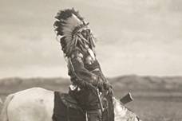
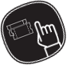
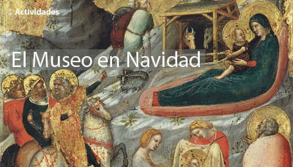

Museo La Salina
English Version

Exposición temporal
La ilusión del Lejano Oeste.
Del 04 de noviembre de 2015 al 20 de febrero de 2016
Se recomienda la compra anticipada de entradas

→ Colecciones
Obras, Artistas, Vídeos relacionados
→ Exposiciones
Actuales, Próximas, Historico...
→ Visita el Museo
Horarios ,Tarifas, Ubicación...
→ Actividades
Reserva y sigue las actividades.
→ Estudios de la colección
Reserva y sigue las actividades.
→ Tienda online
Publicaciones, Regalos...
